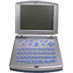
Zipit Z1∗ 介紹
∗ 拆機
∗ 終極改造
∗ Boot ROM
∗ 逆向zpm.bin
∗ 焊接UART接頭
∗ Build Kernel
∗ 逆向loader.bin
∗ 安裝OpenZipit系統
∗ Upload程式(C/C++)
∗ Upload程式(Python)
⊕ Assembly
∗ Hello, world!
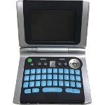
Zipit Z2∗ 介紹
∗ 拆機
∗ 焊接UART接頭
∗ 焊接JTAG接腳
∗ 安裝z2uFlashstock
∗ 如何使用JTAG燒錄UBoot
∗ build uboot
∗ build openwrt
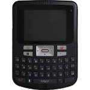
Zipit Z3∗ 介紹
∗ 拆機
∗ 可視角
∗ 焊接UART接頭
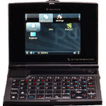
Qi-hardware Ben Nanonote∗ 介紹
∗ 拆機
∗ 修復LCD排線
∗ 焊接UART接頭
∗ Telnet、SSH連接
∗ 更換螢幕(3.5吋 IPS ILI9488)
∗ Build SDLPAL
∗ Build Rockbot
∗ Build Jinyong
∗ Build Kernel
∗ Build Toolchain
∗ Build Xburst-Tools
∗ Build OpenWRT
∗ Install OpenWRT(NAND)(reflash.sh)
∗ Install OpenWRT(NAND)(usbboot)
∗ Install OpenWRT(SDCard)
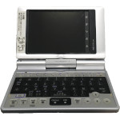
Sharp Zarus SL-C700∗ 介紹
∗ 代號
∗ 開機模式
∗ Flash分區
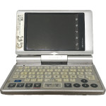
Sharp Zarus SL-C860∗ 介紹
∗ 拆機
∗ Restore
∗ 製作UART、USB接頭
∗ (My Bootloader) UART
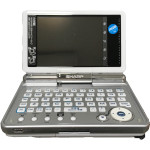
Sharp Zarus SL-C3000∗ 介紹
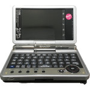
Sharp Zarus SL-C3200∗ 介紹
∗ Restore
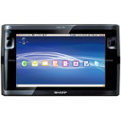
Sharp Netwalker PC-T1∗ 介紹
∗ 拆機
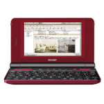
Sharp Netwalker PC-Z1∗ 介紹
∗ 拆機
∗ Restore
∗ 改造成直板外觀
∗ 3.7V 4000mA電池
∗ 編譯Android 2.3.4
∗ 編譯Android 4.0.3
∗ 安裝Android 2.3.4(MicroSD)
∗ 安裝Android 4.0.3(MicroSD)
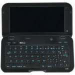
Sharp IS01∗ 介紹
∗ Root
∗ 拆機
∗ Reset All密碼
∗ 安裝Android 2.2(Flash)
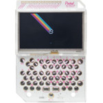
PocketCHIP∗ 打印鍵盤外殼
∗ Build PCSX ReARMED
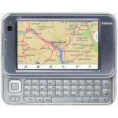
Nokia N810∗ 介紹
∗ 拆機
∗ 分區表
∗ 安裝系統
∗ 備份系統
∗ 終極改造
∗ 支援sudo
∗ 焊接UART接頭
∗ 更改選單Icon
∗ Build OpenWRT
∗ Build Guile 2.0.11
∗ Build XML-Parser 2.34
∗ Build Kernel 2.6.30-rc8
∗ Boot from sdcard
∗ 解決"multiple definition of g_bit_nth_lsf"
∗ 解決"undefined reference to kconf_id_lookup"
⊕ Native Debian
∗ 如何讓Console列印到螢幕
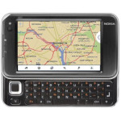
Nokia N810 WiMAX∗ 介紹
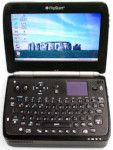
Vulcan FlipStart E-1001S∗ 介紹
∗ 更換風扇
∗ 更換硬碟
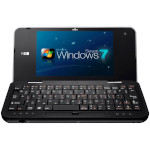
Viliv N5∗ 介紹
∗ 安裝Arch Linux(XFCE4)
∗ 解決鍵盤左上角發出的奇怪聲音
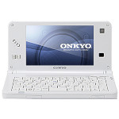
Onkyo BX407A4∗ 介紹
∗ 拆機
∗ PCB剪裁
∗ 使用USB隨身碟取代SSD硬碟
∗ Samsung 18650 3.7V 2600mA電池
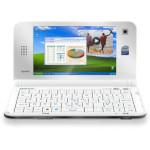
UMID Mbook M1∗ 介紹
∗ 拆機
∗ 螢幕仰角
∗ 終極改機
∗ 安裝WinXP
∗ 安裝Ubuntu 9.04(GUI)
∗ 安裝Ubuntu 10.10(CLI)
∗ 安裝Ubuntu 10.10(GUI)
∗ Panasonic 18650 3.7V 3100mA電池
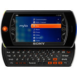
Sony Mylo COM-2∗ 介紹
∗ 拆機
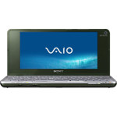
Sony VGN-P25∗ 介紹
∗ 調整CPU速度(Ubuntu)
∗ 調整LCD亮度(Ubuntu)
∗ 調整螢幕解析度(WinXP)
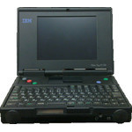
IBM PC110∗ 介紹
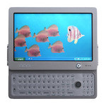
OQO Model 01+∗ 介紹
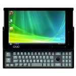
OQO Model 02∗ 介紹
∗ 3.7V 14000mA電池
∗ Samsung 3.7V 2500mA電池x2
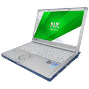
Panasonic CF-NX2∗ Backlight設定
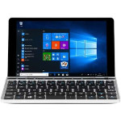
GPD Pocket 2∗ 安裝系統(Debian 9)
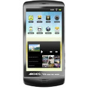
Archos 43∗ 拆機
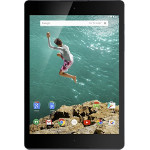
Google Nexus 9∗ 修復無法開機的問題